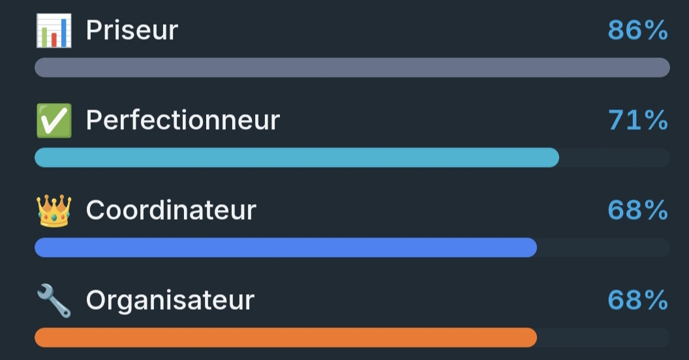

Bonjour, moi c'est Roman.
Je suis actuellement étudiant en deuxième année de BUT Informatique.
Au cours de ma formation, j'ai eu l'occasion de travailler sur différents projets dans plusieurs domaines : développement web, développement d'application, bases de données, développement mobile et analyse de données.
Mon parcours
Ma première découverte de l'informatique a eu lieu au lycée, après avoir entendu parler de la spécialité NSI (Numérique et Sciences de l'Informatique). J'ai donc opté pour cette spécialité en plus des spécialités maths et physique. J'ai gardé la spécialité NSI jusqu'en terminale et j'ai obtenu 20/20 à l'épreuve, contribuant à faire passer ma moyenne du bac à près de 15/20 et me donnant la mention bien.
J'ai choisi de faire un BUT Informatique car il s'agissait de l'option qui me correspondait le plus. Là où la licence est majoritairement composée de cours théoriques avec relativement peu de pratique, et la prépa étant trop générale et pas adaptée à ce que je recherchais, le BUT était l'option idéale. La formation BUT Informatique dure 3 ans, avec un stage obligatoire en 2e année et un stage ou une alternance en 3e année. Cette formation est relativement sélective et est composée majoritairement de TD avec une quantité importante de projets universitaires.
Mes rôles en équipe
Durant mes divers projets universitaires, j'ai eu de nombreuses fois l'occasion de travailler en équipe. J'ai appris différentes manières de gérer une équipe, en particulier la méthodologie Agile Scrum que j'ai été amené à pratiquer lors d'un projet de fin d'année. Plus récemment, j'ai appris que la gestion ne tenait pas uniquement compte des compétences de chacun mais que le comportement, la personnalité et les façons de travailler sont des facteurs importants à prendre en compte. Durant le cours, j'ai fait un test pour voir, parmi les rôles de Belbin, lesquels me correspondaient le plus.

Le test de Belbin met principalement en évidence les rôles de Priseur, de Perfectionneur, de Coordinateur et d'Organisateur. Je suis notamment à l'aise dans l'analyse des différentes possibilités, la recherche d'un résultat de qualité et l'organisation du travail en équipe. Ces rôles correspondent à ma manière de travailler, où j'accorde de l'importance à la réflexion avant la prise de décision, mais également à la bonne organisation et au suivi des tâches.
Mes centres d'intérêts
L'un de mes centres d'intérêts principaux est le jeu vidéo. J'ai beaucoup de fascination envers les joueurs capables de repousser les limites de ce que l'on croit possible sur un jeu, par exemple en découvrant de nouvelles stratégies ou en atteignant un niveau au-delà de ce qui était autrefois considéré comme impossible. Je pense en particulier au jeu Geometry Dash, le jeu sur lequel je suis le plus expérimenté et qui est aussi considéré comme l'un des jeux les plus difficiles, demandant une persévérance et une détermination à toute épreuve pour s'améliorer. J'ai également un fort attrait pour les jeux de stratégie, car face à un choix j'adore passer du temps à réfléchir à la meilleure option possible. J'ai notamment joué aux échecs par le passé et joué à Pokémon Champions, la plateforme de la licence permettant de jouer aux formats compétitifs officiels.